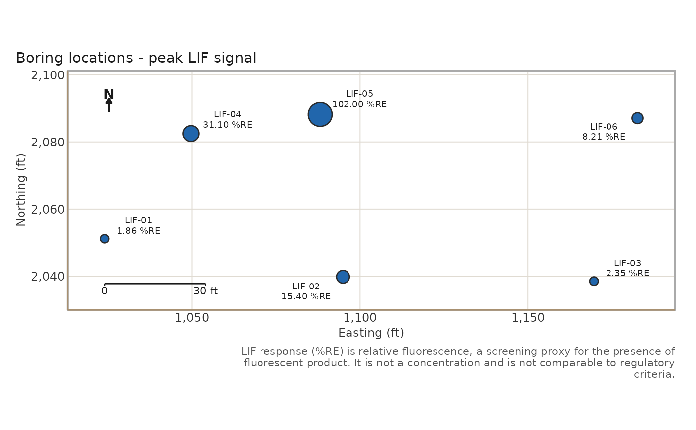

Generates plausible LIF logs for a made-up site: irregular boring
positions over a rectangular area, a plume built from one or more
three-dimensional Gaussian lobes with log-normal noise, a hydrostatic HP
pressure profile with thin low-pressure sand layers, an EC profile that
rises inside the plume and drops in the sands, and an emission colour
keyed to signal strength. Written as one .lif.dat.txt per boring plus a
locations.csv, exactly the layout lif_import() reads, or returned as a
lif_data frame when dir is NULL. The data has no relation to any real
site.
Arguments
- n_borings
Number of borings. Default 12.
- dir
Directory to write into (created if missing).
NULLreturns the data frame without writing.- seed
Random seed. Default 1.
- extent
Site width and height (ft). Default 200.
- origin
c(easting, northing)of the site's lower-left corner.- interval
Depth sampling interval (ft). Default 0.25.
- depth_range
Range of boring total depths (ft), sampled uniformly.
- lobes
A list of plume lobes, each a list with
e,n(plan position, ft),elev(core elevation, ft MSL),sig_h,sig_v(horizontal and vertical spread, ft), andpeak(%RE).NULLuses two overlapping lobes near the centre of the site.- msl
Mean ground-surface elevation (ft MSL). Default 150.
- noise
Log-normal noise standard deviation on the signal.
- verbose
Print the written file names.
Value
With dir = NULL, a lif_data frame (with the locations joined).
Otherwise the directory path, invisibly.
Examples
lif <- lif_simulate(n_borings = 6)
lif
#> <lif_data> 6 boring(s), 692 sample(s), depth 0.2-37.8 ft, 0 edit(s)
#> channels: signal, ec, hp, color
#> easting northing depth signal boring msl ec hp color
#> 1 1024 2051.1 0.25 1.844 LIF-01 150.3 9.40 2.54 #6B8E23
#> 2 1024 2051.1 0.50 0.222 LIF-01 150.3 8.74 2.58 #B0B0B0
#> 3 1024 2051.1 0.75 0.501 LIF-01 150.3 9.21 2.88 #6B8E23
#> 4 1024 2051.1 1.00 0.107 LIF-01 150.3 9.93 2.55 #B0B0B0
#> 5 1024 2051.1 1.25 0.011 LIF-01 150.3 9.67 2.82 #B0B0B0
#> 6 1024 2051.1 1.50 0.006 LIF-01 150.3 9.76 3.04 #B0B0B0
#> 7 1024 2051.1 1.75 0.102 LIF-01 150.3 9.78 2.79 #B0B0B0
#> 8 1024 2051.1 2.00 0.049 LIF-01 150.3 10.66 2.77 #B0B0B0
#> 9 1024 2051.1 2.25 0.009 LIF-01 150.3 10.04 2.88 #B0B0B0
#> 10 1024 2051.1 2.50 0.088 LIF-01 150.3 10.23 3.02 #B0B0B0
#> # ... 682 more row(s)
boring_map(lif)

d <- tempfile("site")
lif_simulate(n_borings = 4, dir = d, verbose = FALSE)
list.files(d)
#> [1] "LIF-01.lif.dat.txt" "LIF-02.lif.dat.txt" "LIF-03.lif.dat.txt"
#> [4] "LIF-04.lif.dat.txt" "locations.csv"